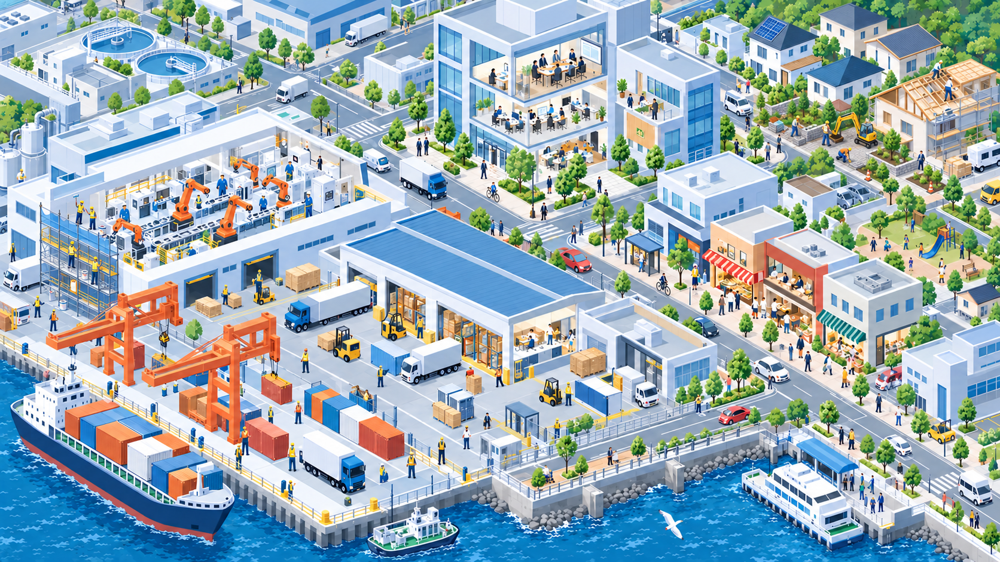
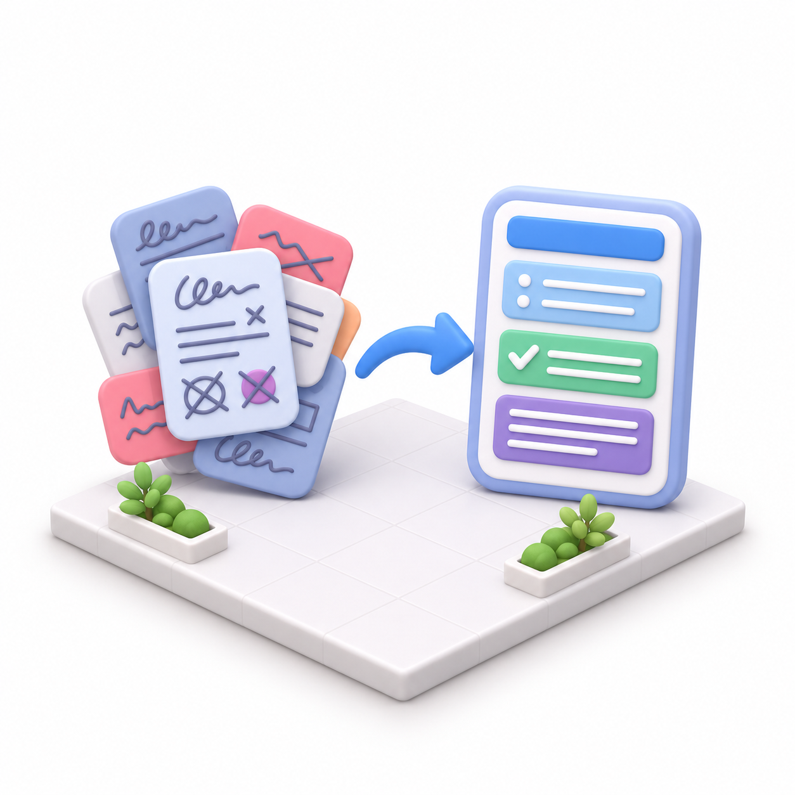
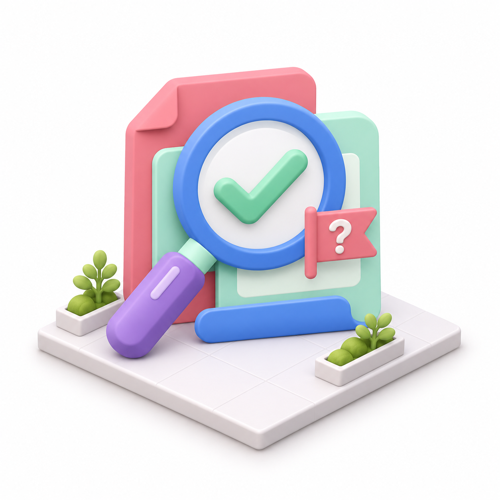
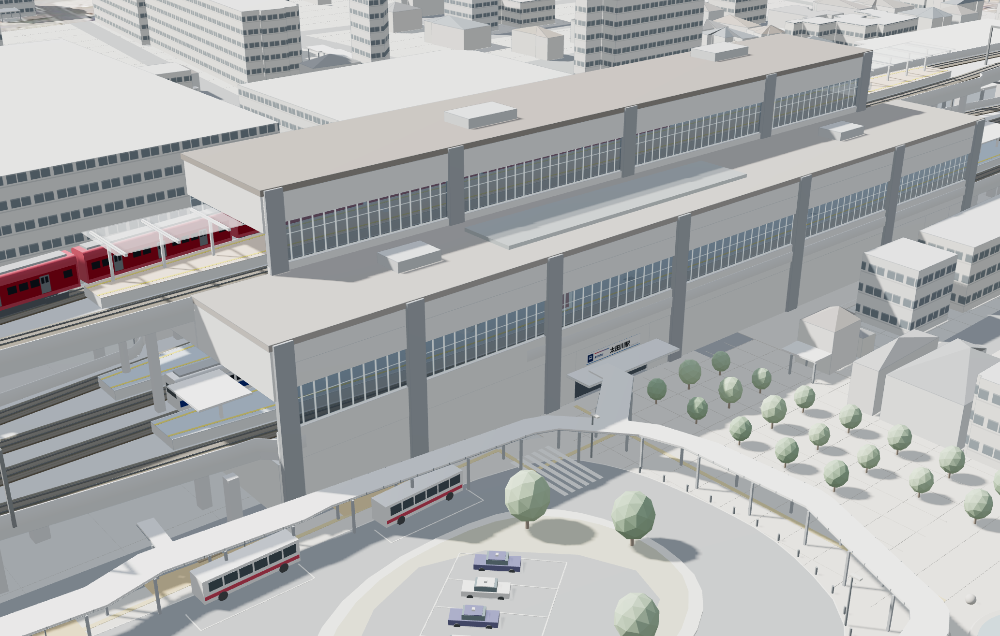

AI SEMINAR ／ 2026年11月
東海JC 11月例会
AIセミナー
実演で知る。仕事に活かす。
可能性を広げる。
TODAY ／ 本日の流れ
実演で知る → 使い方がわかる → 可能性を広げる。
01使い方を見る
画像づくりを実演
外構の提案画像や店頭POPを作る様子を、講師が実演します。
02企画づくりの例
売上UPの施策を作る
調査から施策の検討、スライド作成までの流れをお見せします。
03活用例を紹介
仕事での使い方を知る
仕事に役立つAIの活用例を紹介します。
今日のゴール明日から試せるAI活用のアイディアを、1つ持ち帰る。
身近な仕事に、こんな使い方があります。

点検手順を教えて
塗装の完成イメージを作って
議事録をまとめて
外構の提案を3案
この植物の名前は？
商品のPOPを作って
引継ぎメモを整理して
このメールを英語に
AI TOOLS ／ 代表的なAIツール
本日は Gemini の使い方を実演します。
始めやすさと、機能の種類の多さから選びました。
本日の進め方
講師の画面で、入力する指示と生成される結果をご覧いただきます。
無料でも、今日ご紹介する一部の機能はご利用可能です。利用できる機能や回数は、プランやアカウントによって異なります。
CAPABILITIES ／ Geminiでできること
Geminiに任せられる、8つの仕事。
TODAY'S DEMO ／ 本日の実演で紹介する機能
画像づくり・情報収集・企画書づくりを実演。
02
SECTION 02 ・ 講師による実演
Gemini
活用の実演。
外構のデザインを変える。
次に、商品写真からPOPを作る。
DEMO 01 ／ 完成イメージ
外構のデザインを変えて、完成後をイメージ。
住宅の写真から、玄関までの道・植物・ポストの提案画像へ。
この写真と指示文でGeminiが生成した例です。生成結果は毎回異なります。
DEMO 01 ・ 実演する内容
外構のデザインを、変える実演。
写真を添付して、変えたいところを短く伝えます。
- 1写真を添付
- 2指示文を貼り付け
- 3送信して確認
玄関までの道を石畳にして、
植物とポストを追加して。
GEMINI ／ 実演の操作
実演の操作（外構のイメージ）
2ファイルをアップロード
保存した教材画像を選びます。
DEMO 02 ／ 完成イメージ
商品写真から、お店で使うPOPへ。
商品名と価格を伝えて、手に取りたくなる見せ方を考えます。
この写真と指示文でGeminiが生成した例です。追加された宣伝文句は、事実に合うか確認します。
DEMO 02 ・ 実演する内容
商品写真を使って、店頭POP（ポップ）を作る実演。
写真を添付して、商品名と価格を伝えます。
- 1写真を添付
- 2指示文を貼り付け
- 3送信して確認
この写真で店頭POPを作って。
焼き菓子3個セット、税込600円。
GEMINI ／ 実演の操作
実演の操作（店頭POP）
2ファイルをアップロード
保存した教材画像を選びます。
03
SECTION 03 ・ 講師による実演
売上UPの
施策を作る。
Deep Research → 施策を考える → 提案用のスライドにまとめる
FLOW ／ 実演の流れ
調べる → 深掘りする → スライドにまとめる。
電気・設備工事会社を例に、調査から提案資料の作成までを実演します。
STEP 1
Deep Research
売上UPの事例を調べる
同業の会社の事例を5つ集めます。
→
STEP 2
深掘り
条件に合う施策を選ぶ
顧客層・営業体制を伝え、来月の施策を1つに絞ります。
→
STEP 3
スライド作成
Canvasで提案資料に
施策・期待効果・来月の行動を3枚のスライドにまとめます。
STEP 1 ／ 機能紹介
Deep Researchとは？
複数のWebサイトを調べ、出典つきのレポートにまとめる機能です。
01
複数の情報源を調べる
テーマに合わせて調査計画を立て、Web上の情報を集めます。
02
要点を整理してまとめる
集めた情報を比較・整理し、レポートにします。
03
出典から元の情報を確認できる
事例や数字の根拠を、リンク先で確かめられます。
参考：Google公式ヘルプ
STEP 1 ・ 実演する内容
Deep Researchで、同業の事例を調べる実演。
地域・業種・社員数を、自社に置き換えて入力します。
- 1「＋」→ Deep Research
- 2指示文を入力・送信
- 3計画を確認 → リサーチを開始
東海市の電気・設備工事会社※です。
社員30人※の会社が真似できる売上UP事例を5つ調べて。
STEP 1 ／ 実演の操作
実演の操作（Deep Research）
1＋を押す
2その他のツール → Deep Research
3指示文を入力して送信
4計画を確認して、リサーチを開始
調べたい内容に
なっているかを確認し、
青いボタンを押します。
STEP 1 ／ 調査結果の例
Geminiが調べた施策を、見てみます。
STEP 2 ・ 実演で使う指示文
来月できる、売上UPの施策を
1つに絞る実演。
同じチャットで、顧客層や営業体制を短く追加します。
既存客は地元の工場が中心。営業専任は不在です。※
調査の5事例から来月試せる施策を1つ選び、最初の行動を教えて。
STEP 2 ／ 実演の操作
実演の操作（施策を1つに絞る）
STEP 3 ・ 実演で使う指示文
選んだ施策を、3枚のスライドに
まとめる実演。
新しいチャットでCanvasを選び、指示文の下に回答を貼り付けます。
以下の内容を、施策・期待効果・来月の行動の3枚のスライドにして。
イラストや図を多く使って、文字は大きく少なめに。
STEP 3 ／ 実演の操作
実演の操作（Canvasでスライドを作る）
実演のまとめ
調べた内容が、
提案資料に。
講師が作成した資料をお見せします。施策・期待効果・次の行動まで、一連の流れで形にできます。
04
SECTION 04
主な活用事例と
気を付けること。
仕事での使いどころと、安心して活用するための基本。
USE CASES ／ 活用事例
実務で使える、AI活用の事例。
読み取り・整理から、図面の活用、立体での見える化まで。

01 ／ 事務・原価管理
請求書の読み取りと
原価の振り分け
請求書の明細を読み取り、工事ごとの原価に振り分ける。

02 ／ 積算
図面からの積算
図面から部材と数量を拾い、見積の下書きを作る。

03 ／ 立体で伝える
太田川駅の3D模型化
公開情報をもとに、回転・断面表示できる模型を作る。
3D模型を見る ↗
業務の仕組みと組み合わせた活用例です。読み取り・積算は人が確認。3D模型には推定を含みます。
SAFETY ／ 気を付けること
生成AIを使うときの、4つの基本。
入力する前と、出来上がったものを使う前に確認しましょう。
01
無料・未承認の環境に、仕事の情報を入れない
個人情報・顧客情報・未公開の図面や金額は入力しない。仕事では会社が認めた環境を使う。
02
有料でも、学習設定を確認する
モデル改善への利用をオフにできる場合は設定。法人契約はデータ保護の条件を確認する。
03
APIキーは、パスワードと同じ扱い
チャット・共有資料・公開サイトに貼らない。漏れた場合は無効化し、作り直す。
04
公開・送信の前に、人が確認する
数字・事実・画像の権利を確認。AIにメール送信や削除を任せるときも、実行前に確認する。
無料／有料だけでは判断できません。学習をオフにしても、保存や安全監視がなくなるとは限りません。
明日から、
1つ試してみよう。
ご清聴ありがとうございました。